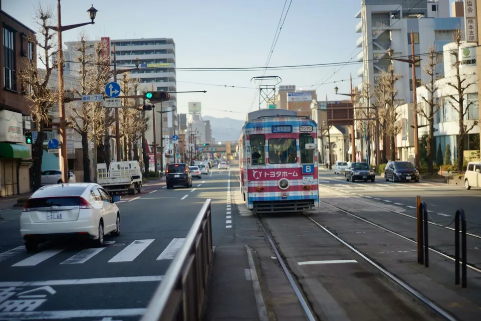
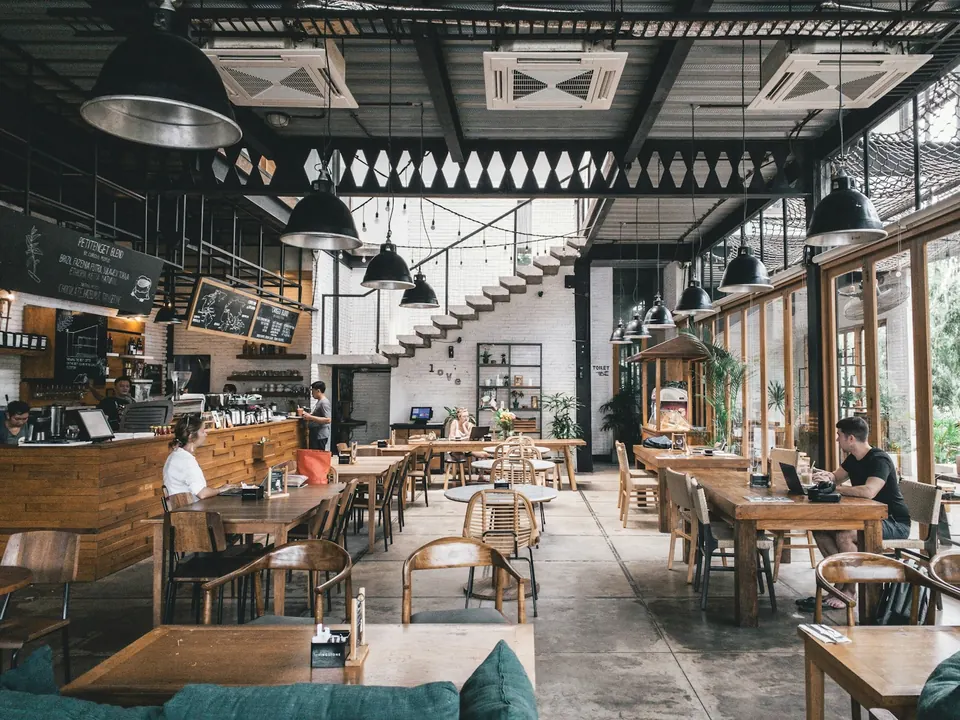
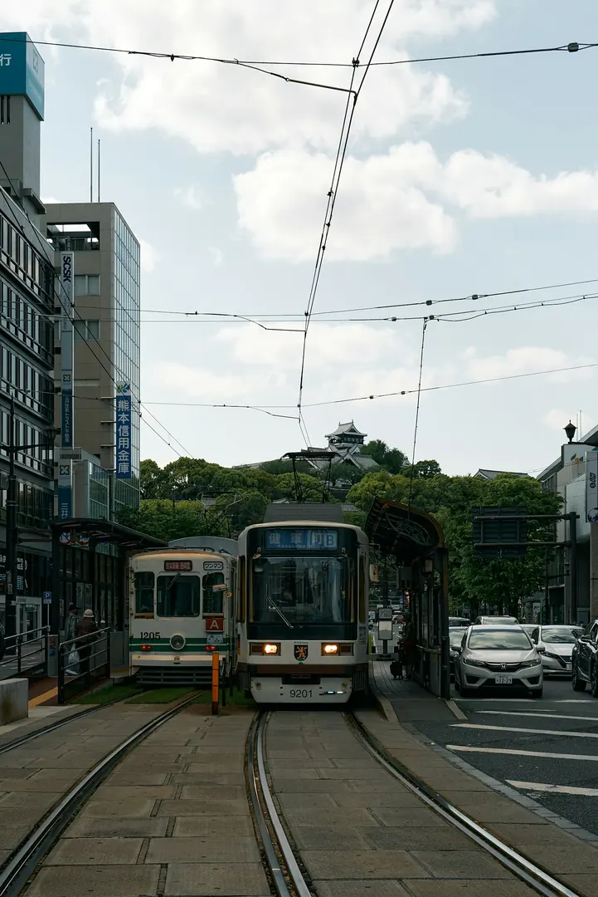

Googleで検索すると、情報が古い
営業時間や写真が更新されず、初めての人が迷う。
熊本の小さなお店向け 店舗マーケター
ホームページ、SNS、Googleマップ、店舗業務まで。
お店全体を見て、今必要なところから一緒に整えます。
いま相談できる：Web制作
InstagramのDMでも相談できますProblem
サービスの一覧より先に、店主さんの目線で整理します。ITが苦手でも大丈夫です。

営業時間や写真が更新されず、初めての人が迷う。

フォロワーはいるのに、来店や予約が増えない。

料金や場所・アクセスがSNSだけでは伝わりにくい。
日報、予約、在庫…バラバラで手間がかかる。
集客も、業務も、まとめて見直せます。
Webだけ・SNSだけ・アプリだけ、ではなく、お店全体を見ます。
Service
「Webの人」「SNSの人」「ソフトの人」に分けて頼む必要はありません。
Attract
Web / Instagram / Googleマップで、来店・予約につなげる。
Organize
バラバラな情報と導線を、お客さんが迷わない形に。
Ease
紙・LINE・記憶頼みの業務を、店長のPCで少しずつ減らす。
Attract
Web / Instagram / Googleマップ
Organize
店舗診断 / 情報整理 / 予約導線
Ease
みせシリーズ / 業務改善
For your shop
業種ごとに、今の状態 → 提案内容が変わります。
Works
架空店舗の自主制作デモ。課題 → 提案 → 改善の流れで設計しています。
Store tools
アプリ販売サイトではなく、店の面倒を減らす6つの道具。店長のWindows PC 1台で使えます。
必要なものだけ選べる。
月980円（税込）から、店舗業務も整えられます。
33,000円〜
営業時間・料金・場所・予約を1ページに。
66,000円〜
複数ページでしっかり案内。
16,500円〜/月
投稿作成・プロフィール改善。
0円
契約前提ではありません。
980円/月（税込）
導入費 11,000円（税込）
2,480円/月（税込）
導入費 22,000円（税込）
2,980円/月（税込）
導入費 27,500円（税込）
3,980円/月（税込）
導入費 33,000円（税込）
流れ：無料診断 → 必要なものだけ見積もり → ご納得後に着手
Kumamoto base
観光向けではなく、熊本で営む小さなお店の集客と業務を、現場から支える活動です。
About
何でも売りたいわけではありません。まず店を見て、本当に必要なところから考えます。
熊本を拠点に、小さなお店の集客と業務改善を支援。制作・提案・導入まで菊地本人が直接対応します。
Contact
Googleマップ・Instagram・ホームページ・予約導線・日々の業務を無料で確認します。契約前提ではありません。